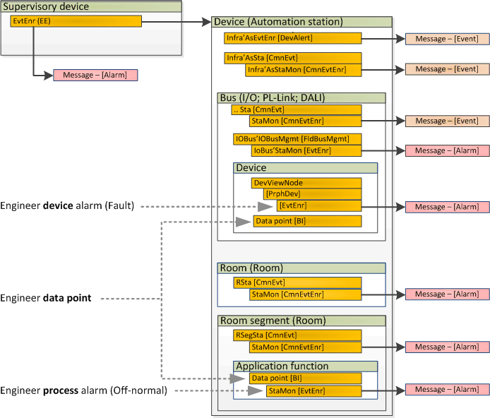

预配置常见警报
默认情况下，ABT Pro 库 (Desigo Room Automation...) 中的解决方案包括常见警报 (CmnEvtEnr)。

| Type | Object name | Notification
| Object property reference | Event parameters | ||||
Type | Time delay | States list | |||||||
| |||||||||
监控自动化站 (Desigo PX) | EVTERL | Sprvis'[号码]'EE01 | 31 | 警报 AlmFunct=Simple AlarmClass=Normal | EvtPars | 状态变化 - 系统状态 | 1 | 0 | |
| |||||||||
-- |
| DevAlert | Infra'AsEvtEnr | 18 | 事件 | 普通的 |
|
|
|
-- | AS | CmnEvtEnr | Infra'AsStaMon | 8 | 事件 | 现值 | 状态改变 | 0 | 3=故障 |
| |||||||||
-- | TX-I/O bus alarm | CmnEvtEnr | IOBus'TxIOBusStaMon | 8 | 事件 | 现值 | 状态改变 | 0 | 3=正在初始化 |
| EvtEnr | IOBus'StaMon | 8 | 警报 | 现值 | 状态改变 | 20 | 4=配置丢失或错误 | |
-- | PL-链路总线报警 | CmnEvtEnr | PlnkBus'PlnkBusStaMon | 8 | 事件 | 现值 | 状态改变 | 0 | 3=正在初始化 |
| EvtEnr | PlnkBus'StaMon | 8 | 警报 | 现值 | 状态改变 | 20 | 4=配置丢失或错误 | |
-- | DALI bus alarm | CmnEvtEnr | DaliBus'DaliBusStaMon | 8 | 事件 | 现值 | 状态改变 | 0 | 3=正在初始化 |
| EvtEnr | DaliBus'StaMon | 8 | 警报 | 现值 | 状态改变 | 20 | 4=配置丢失或错误 | |
| |||||||||
-- | 房间报警器 | CmnEvtEnr | ..'R斯塔蒙 | 8 | 警报 | 现值 | 状态改变 | 0 | 3=故障 |
-- | 房间分段报警 | CmnEvtEnr | ..'RSegmStaMon | 8 | 警报 | 现值 | 状态改变 | 0 | 3=故障 |
-- | Central function | CmnEvtEnr | ..'CenFnctStaMon | 8 | 警报 | 现值 | 状态改变 | 0 | 3=故障 |
-- | 紧急区域照明 | CmnEvtEnr | ..'RSegmStaMon | 8 | 警报 | 现值 | 状态改变 | 0 | 3=故障 |
 ：普通报警（CmnEvtEnr）默认启用。在硬件和网络编辑器中启用/disable。
：普通报警（CmnEvtEnr）默认启用。在硬件和网络编辑器中启用/disable。
-- : 公共报警 (CmnEvtEnr) 始终启用
默认通知类别：8
Operating state for an automation station [AsSta] and a room / room segment [RSta]:
1=正常
2=干预活跃
3=故障
4=报警
5=故障报警
Operating state for a bus [FldBusMgmt]:
1=运行中
2=已停止
3=正在初始化
4=配置丢失或错误
5=通讯错误
Operating state for a device [PrphDev]:
1=运行中
2=设备停止
3=设备未分配
4=设备丢失
5=配置设备
6=设备不可分配
7=配置丢失或错误

监控总线的运行状态不包括获取总线上各个设备的运行状态。但是，如果设备数据点的可靠性由公共警报“CmnEvtEnr”监控（即进行相应设计），则设备的运行状态将受到间接监控。